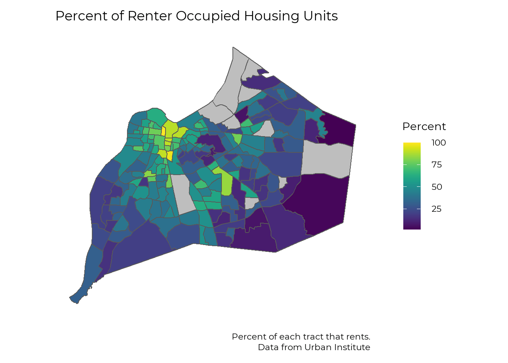
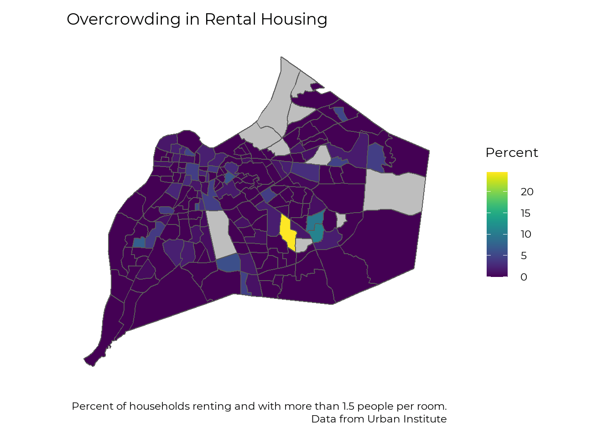
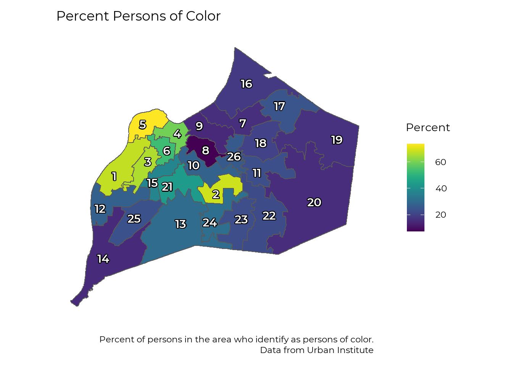
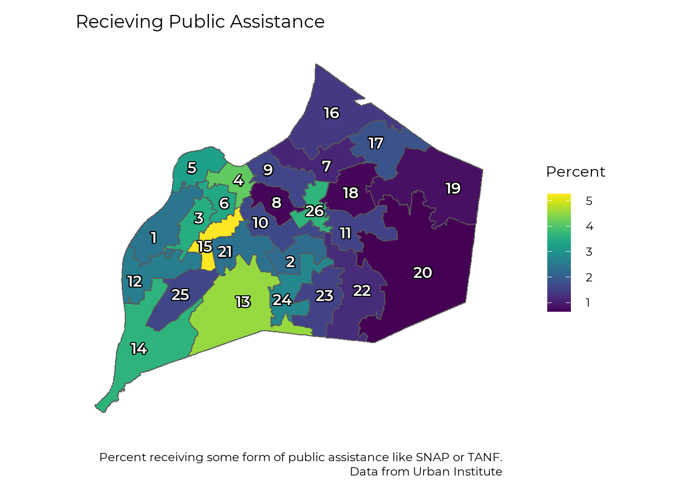
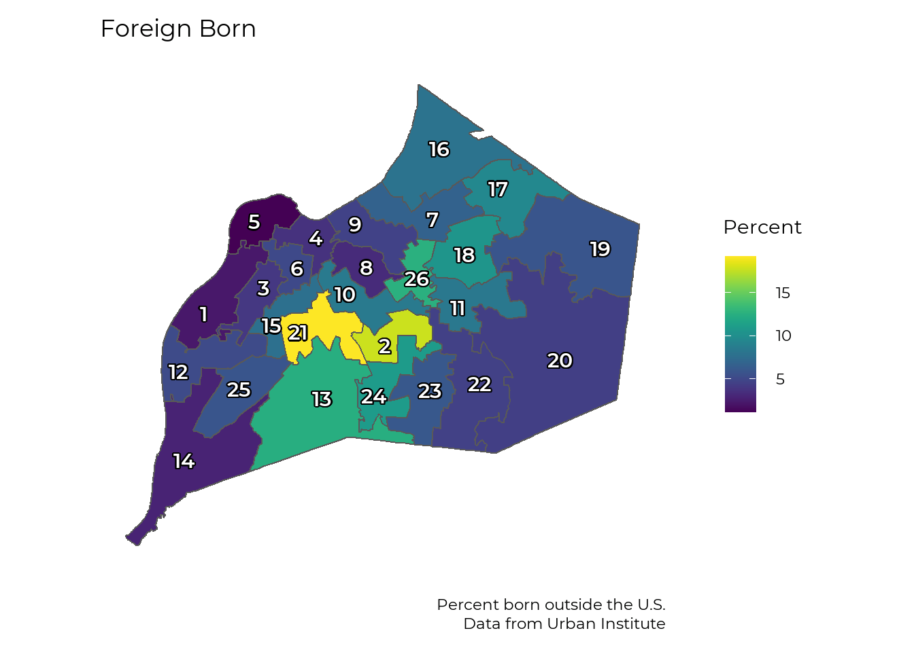

Chapter 3 Housing Instability
library(tidyverse)## -- Attaching packages --------------------------------------- tidyverse 1.3.1 --## v ggplot2 3.3.5 v purrr 0.3.4
## v tibble 3.1.2 v dplyr 1.0.7
## v tidyr 1.1.3 v stringr 1.4.0
## v readr 1.4.0 v forcats 0.5.1## -- Conflicts ------------------------------------------ tidyverse_conflicts() --
## x dplyr::filter() masks stats::filter()
## x dplyr::lag() masks stats::lag()library(rgdal)## Loading required package: sp## rgdal: version: 1.5-23, (SVN revision 1121)
## Geospatial Data Abstraction Library extensions to R successfully loaded
## Loaded GDAL runtime: GDAL 3.2.1, released 2020/12/29
## Path to GDAL shared files: C:/Users/harri/OneDrive/Documents/R/win-library/4.1/rgdal/gdal
## GDAL binary built with GEOS: TRUE
## Loaded PROJ runtime: Rel. 7.2.1, January 1st, 2021, [PJ_VERSION: 721]
## Path to PROJ shared files: C:/Users/harri/OneDrive/Documents/R/win-library/4.1/rgdal/proj
## PROJ CDN enabled: FALSE
## Linking to sp version:1.4-5
## To mute warnings of possible GDAL/OSR exportToProj4() degradation,
## use options("rgdal_show_exportToProj4_warnings"="none") before loading rgdal.
## Overwritten PROJ_LIB was C:/Users/harri/OneDrive/Documents/R/win-library/4.1/rgdal/projlibrary(sf)## Linking to GEOS 3.9.0, GDAL 3.2.1, PROJ 7.2.1library(viridis)## Loading required package: viridisLitelibrary(magrittr)##
## Attaching package: 'magrittr'## The following object is masked from 'package:purrr':
##
## set_names## The following object is masked from 'package:tidyr':
##
## extractload("housing_data/glptools_exports.RData")
df <- read_csv("housing_data/housing_index_raw.csv")##
## -- Column specification --------------------------------------------------------
## cols(
## .default = col_double(),
## GEOID = col_character(),
## state_name = col_character(),
## county_name = col_character(),
## state_fips = col_character(),
## county_fips = col_character()
## )
## i Use `spec()` for the full column specifications.# Filter to just peers
df_peer <- df %>%
filter(county_fips %in% c("1073", "18097", "21111", "26081", "29095", "29189",
"29510", "31055", "37081", "37119", "39049", "39061",
"40109", "40143", "45045", "47037", "47093", "47157")) %>%
select(-contains("z_score"), -contains("index")) #drop index and z_score terms so we can recreate them
# Make z scores
make_z <- function(x){
x <- (x - mean(x)) / sd(x)
}
df_z <- df_peer %>%
mutate(across(where(is.numeric), make_z, .names = "z_{.col}"))
df_index <- df_z %>%
mutate(
housing_instability_index = z_perc_poverty_12mnth * .2 + z_perc_renters * .2 + z_perc_cost_burdened_under_35k * .2 + z_perc_overcrowding_renter_1.50_or_more * .2 + z_perc_unemployed_laborforce * .2,
covid_index = z_perc_no_hinsure * .5 + z_perc_low_income_jobs_lost * .5,
equity_index = z_perc_person_of_color * .5 + z_perc_30hamfi * .167 + z_perc_public_assistance * .167 + z_perc_foreign_born * .167,
overall_index = housing_instability_index * .5 + covid_index * .1 + equity_index * .4
)This recreates the Urban Institutes Emergency Rental Assistance Priority Index for Louisville. The original index compares Louisville to the rest of Kentucky. At Greater Louisville Project, we think the more appropriate comparison is to our other peer cities. While the maps below show Louisville, the index values are based on a comparison to all census tracts in the core counties of our peer cities.
Greater Louisville Project has also aggregated the data up to the metro council district level. That data is available in both maps and tables.
In addition to the indexes, the indicators that make up the indexes are also mapped below. Navigation is based on tabs, so clicking on the small blue titles brings up the map related to each title.
3.1 Methods and Definitions
To produce an index with multiple indicators on different scales we used z-scores, which are a measure of how far away from average an observation is. For example, if looking at unemployment, we start with the unemployment rate in all tracts and the score for an individual tract is the number of standard deviations it is away from the average tract.
Data is from the Urban Institutes Emergency Rental Assistance Priority Index and in most cases is tract level census data from 2018. The low income jobs lost to Covid is an Urban Institute constructed indicator. Complete details on the indicators can be found in the technical appendix, but they are summarized here for convenience.
3.1.1 Housing Instability Index
- Poverty: Under the poverty line in the last 12 months
- Percent Renting: The percent of households in the area who rent
- Cost Burdened: Households making less than 35,000 and paying more than 50% of their income in rent
- Overcrowding: Households renting and with more than 1.5 people per room.
- Unemployed: In the labor force but not currently employed.
3.1.2 Covid Index
- Health Insurance: Based on the noninstitutionalized population ages 19-64.
- Low Income Job Loss from Covid: Estimated jobs lost to Covid based on previous Urban Institute Study
3.1.3 Equity Index
- Percent Persons of Color: Percent of people in the area who identify as persons of color
- Extremely Low Income: Renter occupied household making less than 30 percent of area median income
- Public Assistance: Percent receiving some form of public assistance like SNAP or TANF
- Foreign Born: Percent born outside the U.S.
3.2 Rental Insecurity Index
jfco_shp <- readOGR("housing_data/JC Tracts", layer = "JC Tracts",
GDAL1_integer64_policy = TRUE, verbose = FALSE)
jfco_sf <- st_as_sf(jfco_shp) %>%
mutate(GEOID = str_sub(GEO_ID, start = -11))
jfco_index <- df_index %>%
filter(county_fips == "21111")
# Urban institute includes a greyed out flag for tracts without enough data
# It's easier to set the values to NA because the graphing framework has the ability to easily assign NA a different color
jfco_index <- jfco_index %>%
mutate(across(where(is.numeric), ~if_else(jfco_index$grayed_out == 1, NA_real_, .)))
jfco_sf <- full_join(jfco_sf, jfco_index, by = "GEOID")
# Transform the percents
mult100 <- function(x){
x <- x * 100
}
jfco_sf <- jfco_sf %>%
mutate(across(starts_with("perc_"), mult100))
make_map <- function(indicator, title = "", legend = "", caption = "", no_legend = FALSE, vir_dir = 1){
plt <- ggplot(jfco_sf) +
geom_sf(aes(fill={{ indicator }} )) +
# scale_fill_gradient(low = "#323844", high = "#d63631", name = "Percent") +
scale_fill_viridis(na.value = "grey", name = legend, direction = vir_dir) +
theme_bw(base_size = 22) +
theme(plot.caption = element_text(lineheight = .5)) +
theme(text = element_text(family = "Montserrat"),
panel.grid = element_blank(),
axis.text = element_blank(),
axis.ticks = element_blank(),
axis.title = element_blank(),
panel.border = element_blank()) +
labs(title = title,
caption = caption)
if (no_legend == TRUE){
plt <- plt + theme(legend.position = "none")
}
plt <- plt +
theme(
panel.background = element_rect(fill = "transparent", color = NA), # bg of the panel
plot.background = element_rect(fill = "transparent", color = NA), # bg of the plot
legend.background = element_rect(fill = "transparent", color = "transparent"), # get rid of legend bg
legend.box.background = element_rect(fill = "transparent", color = "transparent"), # get rid of legend panel bg
legend.key = element_rect(fill = "transparent",colour = NA))
return(plt)
}
make_map(overall_index, title = "Rental Insecurity Index",
legend = "Compared to \n other tracts",
caption = "Lighter shades indicate higher rental insecurity. \n This is the Urban Institute's Emergency Rental Assistance Priority Index modified \nto compare Louisville to its peer cities (instead of to other areas in Kentucky). \n Greyed out areas had insufficient data for the index",
no_legend = TRUE)You can flip through the tabs below to see each of the three subindexes that make up the overall rental index.
Housing Instability Subindex
- Share of people living in poverty
- Share of renter-occupied housing units
- Share of severely cost-burdened low-income renters
- Share of severely overcrowded households
- Share of unemployed people
make_map(housing_instability_index, title = "Housing Instability Subindex",
legend = "Compared to \n other tracts",
caption = "Lighter shades indicate higher housing instability. \n This is the Urban Institute's Housing Instability subindex modified \nto compare Louisville to its peer cities (instead of to other areas in Kentucky). \n Greyed out areas had insufficient data for the index",
no_legend = TRUE)Covid 19 Impact Subindex
- Share of adults without health insurance
- Share of low-income jobs lost to Covid-19
make_map(covid_index, title = "Covid Instability Subindex",
legend = "Compared to \n other tracts",
caption = "Lighter shades indicate higher covid instability. \n This is the Urban Institute's Covid Instability subindex modified \nto compare Louisville to its peer cities (instead of to other areas in Kentucky). \n Greyed out areas had insufficient data for the index",
no_legend = TRUE)Equity Subindex
- Share of people of color
- Share of extremely low-income renter households
- Share of households receiving public assistance
- Share of people born outside the United States
make_map(equity_index, title = "Equity Subindex",
legend = "Compared to \n other tracts",
caption = "Lighter shades indicate higher prioritization based on equity. \n This is the Urban Institute's Equity subindex modified \nto compare Louisville to its peer cities (instead of to other areas in Kentucky). \n Greyed out areas had insufficient data for the index",
no_legend = TRUE)3.3 Housing Instability Indicators
Poverty
make_map(perc_poverty_12mnth, title = "Poverty",
legend = "Percent",
caption = "Percent of each census tract that is in poverty. \n Data from Urban Institute.")
Percent Renting
make_map(perc_renters, title = "Percent of Renter Occupied Housing Units",
legend = "Percent",
caption = "Percent of each tract that rents. \n Data from Urban Institute")
Cost-burdened housholds
make_map(perc_cost_burdened_under_35k, title = "Costburdened Households making under 35k",
legend = "Percent",
caption = "Percent of households making less than 35,000 and paying more than 50% of their income in rent. \n Data from Urban Institute")Overcrowding
make_map(perc_overcrowding_renter_1.50_or_more, title = "Overcrowding in Rental Housing",
legend = "Percent",
caption = "Percent of households renting and with more than 1.5 people per room. \n Data from Urban Institute")
Unemployed
make_map(perc_unemployed_laborforce, title = "Unemployment",
legend = "Percent",
caption = "Percent of people unemployed but still in the labor force (actively seeking work). \n Data from Urban Institute")
3.4 Covid Indicators
No Health Insurance
make_map(perc_no_hinsure, title = "No Health Insurance",
legend = "Percent",
caption = "Percent without health insurance. \n Data from Urban Institute")Low Income Jobs Lost to Covid
make_map(perc_low_income_jobs_lost, title = "Low Income Jobs Lost to Covid",
legend = "Percent",
caption = "Estimate from the Urban Institute based on job categories in the each tract. \n Data from Urban Institute")3.5 Equity Index
Percent PoC
make_map(perc_person_of_color, title = "Percent Persons of Color",
legend = "Percent",
caption = "Percent of persons in the area who identify as persons of color. \n Data from Urban Institute")Extremely Low Income
make_map(perc_30hamfi, title = "Extremely Low Income",
legend = "Percent",
caption = "Renter occupied household making less than 30 percent of area median income. \n Data from Urban Institute")
Public Assistance
make_map(perc_public_assistance, title = "Recieving Public Assistance",
legend = "Percent",
caption = "Percent receiving some form of public assistance like SNAP or TANF. \n Data from Urban Institute")Foreign Born
make_map(perc_foreign_born, title = "Foreign Born",
legend = "Percent",
caption = "Percent born outside the U.S. \n Data from Urban Institute")3.6 Peer City Data
Peer city data is available for the housing stability subindex.
# Ranking graph function
ranking <- function(df, var, plot_title = "",
year = NULL, sex = "total", race = "total",
order = "Descending",
y_title = "Percent", caption_text = "", subtitle_text = "",
bar_label = TRUE, sigfig = 3, accuracy = 0.1,
label_function, alternate_text = NULL,
ranking_colors = TRUE, text_size){
# Copy variable var to a new column for use with the '$' operator
var <- dplyr:::tbl_at_vars(df, vars(!!enquo(var)))
df$var <- df[[var]]
# Filter to sex, race, and year
if ("sex" %in% names(df)) df <- df[df$sex == sex,]
if ("race" %in% names(df)) df <- df[df$race == race,]
if("year" %in% names(df)) {
if (is.null(year)) year <- max(years_in_df(df, var))
df <- df[df$year %in% year,]
if (length(year) > 1) {
df %<>%
group_by_at(df %cols_in% c("MSA", "FIPS")) %>%
summarise(var = mean(var, na.rm = TRUE)) %>%
ungroup()
}
}
# Add peer data if not already present
# if (df_type(df) %in% c("FIPS", "MSA") & "current" %not_in% names(df)) df %<>% pull_peers(add_info = T)
# Sort according to order parameter
if (order %in% c("descending", "Descending")) df %<>% arrange(desc(var))
if (order %in% c("ascending", "Ascending")) df %<>% arrange(var)
df %<>% filter(!is.na(var))
# Create numbered city labels for left side of graph
df %<>%
mutate(
rank = row_number(),
names = paste0(rank, ". ", city))
# Set bar colors
if (ranking_colors) {
# color_values <- c("#96ca4f", "#ffd600", "#db2834")
# color_names <- c("green", "yellow", "red")
# if (order %in% c("descending", "Descending")) {color_names = rev(color_names)}
#
# breaks <- classInt::classIntervals(na.omit(df$var), 3, style = "jenks")
# df$color <- NA
# df$color[df$var <= breaks$brks[2]] <- color_names[1]
# df$color[df$var > breaks$brks[2] & df$var <= breaks$brks[3]] <- color_names[2]
# df$color[df$var > breaks$brks[3]] <- color_names[3]
color_values <- c("#d63631", "#323844")
color_names <- c("gray", "red")
df$color <- "red"
df$color[df$city == "Louisville"] <- "gray"
} else {
df$color <- "blue"
color_values <- "#f58021"
color_names <- "blue"
}
if (order %in% c("descending", "Descending")) color_values = rev(color_values)
# Create numeric labels
# Create numeric labels
if (!missing(label_function)) {
label_text <- df$var %>% signif(sigfig) %>% label_function()
} else if (y_title == "Dollars") {
if(mean(df$var, na.rm = TRUE) > 10000) {
label_text <- df$var %>% signif(sigfig) %>% scales::dollar(accuracy = accuracy, scale = .001, suffix = "k")
} else {
label_text <- df$var %>% signif(sigfig) %>% scales::dollar(accuracy = .01)
}
} else if (stringr::str_detect(y_title, "Percent")) {
label_text <- df$var %>% signif(sigfig) %>% scales::percent(accuracy = accuracy, scale = 1, suffix = "%")
} else {
label_text <- df$var %>% signif(sigfig) %>% scales::comma(accuracy = accuracy)
}
# Set text format, highlight and italicise Louisville text, highlight Louisville bar
df$textcolor <- "#000000"
df$textcolor[df$city == "Louisville"] <- "#000000"
df$textfont <- "Montserrat"
df$textfont[df$city == "Louisville"] <- "Montserrat Bold"
label_color_names <- c("white", "black")
label_color_values <- c("#000000", "#ffffff")
df$label_color <- "white"
df$label_color[df$city == "Louisville"] <- "black"
#df$linecolor <- "#ffffff"
#df$linecolor[df$city == "Louisville"] <- "#00a9b7"
df$lou <- if_else(df$city == "Louisville", 1, 0)
df$text_alignment <- 1.1
if (!is.null(alternate_text)) df$text_alignment[df$rank %in% alternate_text] <- -0.1
### PLOT GRAPH
# Initial plot
p <- ggplot(data = df,
aes(x = factor(names, levels = rev(names)),
y = var,
fill = factor(color, levels = color_names, ordered = TRUE)))
p <- p + guides(fill = FALSE, color = FALSE)
# Add bars
p <- p +
geom_bar(stat = "identity",
size = text_size) +
coord_flip() +
ggthemes::theme_tufte()
p <- p + scale_fill_manual(values = color_values)
#p <- p + scale_color_manual(values = c("#ffffff", "#00a9b7"))
# Add features
title_scale <- min(1, 48 / nchar(plot_title))
p <- p + theme(text = element_text(family = "Montserrat"),
plot.title = element_text(size = 14 * title_scale * text_size, hjust = 0.5, margin = margin(b = 10, unit = "pt")),
axis.text.y = element_text(hjust = 0,
size = 10 * text_size,
color = rev(df$textcolor),
family = rev(df$textfont)),
axis.title.x = element_text(size = 10 * text_size),
axis.ticks = element_blank(),
axis.text.x = element_blank(),
plot.caption = element_text(size = 5 * text_size, lineheight = 0.5))
if(subtitle_text != ""){
p <- p + theme(plot.subtitle = element_text(hjust = 0.5, size = 5 * text_size)) +
labs(subtitle = subtitle_text)
}
# Add numeric labels to bars based on bar_label parameter
if (y_title != "" & bar_label) {
p <- p + geom_text(aes(label = label_text,
hjust = text_alignment,
color = factor(label_color),
family = textfont),
size = 4.5 * text_size) +
scale_colour_manual(values=c("#000000", "#ffffff"))
}
# Add vertical line to the left side of the bars based on the h_line parameter
if (min(df$var, na.rm = TRUE) < 0) p <- p + geom_hline(yintercept = 0, linetype = "longdash", size = 2)
# Add remaining text
p <- p + labs(title = plot_title, y = y_title,
x = "", caption = caption_text)
p <- p +
theme(
panel.background = element_rect(fill = "transparent", color = NA), # bg of the panel
plot.background = element_rect(fill = "transparent", color = NA), # bg of the plot
legend.background = element_rect(fill = "transparent", color = "transparent"), # get rid of legend bg
legend.box.background = element_rect(fill = "transparent", color = "transparent"), # get rid of legend panel bg
legend.key = element_rect(fill = "transparent",colour = NA))
p
}Cost Burdened Renters
#Data was pulled in Python file get_data.py and written to .csv
df <- read_csv("housing_data/low_income_renters.csv")
## This code is modified from the urban institute: https://github.com/UrbanInstitute/covid-rental-risk-index/blob/master/scripts/01_generate_index_variables.R
# Calculate percent of households making under 35k who pay more than 50% of their
# income on rent
df <- df %>%
# select ACS table variables w/ attached GEOID
select(
NAME,
# These are all the peolpe making under 35k (denominator)
B25074_002E,
B25074_011E,
B25074_020E,
# These are all the people making under 35k who pay more than 50% of their income on rent (numerator)
B25074_009E,
B25074_018E,
B25074_027E,
# These are the people making under 35k for whom this metric wasn't computed
# and they therefore need to be subtracted from the denominator
B25074_010E,
B25074_019E,
B25074_028E
) %>%
#rename both county and city to just St. Louis
mutate(NAME = if_else(str_detect(NAME, "St. Louis"), "St. Louis", NAME)) %>%
group_by(NAME) %>%
#use summarize across instead to save space and make reusable in a function
summarize(
B25074_002E = sum(B25074_002E),
B25074_011E = sum(B25074_011E),
B25074_020E = sum(B25074_020E),
B25074_009E = sum(B25074_009E),
B25074_018E = sum(B25074_018E),
B25074_027E = sum(B25074_027E),
B25074_010E = sum(B25074_010E),
B25074_019E = sum(B25074_019E),
B25074_028E = sum(B25074_028E)
) %>%
# create cost burden variable w/ calculation
mutate(
perc_cost_burdened_under_35k = (B25074_009E + B25074_018E + B25074_027E) /
(
B25074_002E + B25074_011E + B25074_020E - B25074_010E - B25074_019E -
B25074_028E
),
#cd add
perc_cost_burdened_under_35k =
if_else(
B25074_002E + B25074_011E + B25074_020E == 0,
0,
perc_cost_burdened_under_35k
)
)
# Clean up for graph
df <- df %>%
mutate(city = recode(NAME,
`Davidson County, Tennessee` = "Nashville",
`Douglas County, Nebraska` = "Omaha",
`Franklin County, Ohio` = "Columbus",
`Greenville County, South Carolina` = "Greenville",
`Guilford County, North Carolina` = "Greensboro",
`Hamilton County, Ohio` = "Cincinnati",
`Jackson County, Missouri` = "Kansas City",
`Jefferson County, Alabama` = "Birmingham",
`Jefferson County, Kentucky` = "Louisville",
`Kent County, Michigan` = "Grand Rapids",
`Knox County, Tennessee` = "Knoxville",
`Marion County, Indiana` = "Indianapolis",
`Mecklenburg County, North Carolina` = "Charlotte",
`Oklahoma County, Oklahoma` = "Oklahoma City",
`Shelby County, Tennessee` = "Memphis",
`Tulsa County, Oklahoma` = "Tulsa"),
perc_cost_burdened_under_35k = 100 * perc_cost_burdened_under_35k)
plt_cost_burdened <- ranking(df, "perc_cost_burdened_under_35k", text_size = 2, order = "ascending",
plot_title = "Cost Burdened Renters in Households Making Under 35k ")
plt_cost_burdened
Overcrowding
#Data was pulled in Python file get_data.py and written to .csv
oc_df <- read_csv("housing_data/overcrowding.csv")
## This code is modified from the urban institute: https://github.com/UrbanInstitute/covid-rental-risk-index/blob/master/scripts/01_generate_index_variables.R
oc_df <- oc_df %>%
# select ACS table variables w/ attached GEOID
select(NAME, B25014_013E, B25014_012E, B25014_008E) %>%
#rename both county and city to just St. Louis
mutate(NAME = if_else(str_detect(NAME, "St. Louis"), "St. Louis", NAME)) %>%
group_by(NAME) %>%
summarize(across(where(is.numeric), sum)) %>%
# create cost burden variable w/ calculation
mutate(perc_overcrowding_renter_1.50_or_more = ((B25014_012E + B25014_013E) / B25014_008E),
perc_overcrowding_renter_1.50_or_more =
if_else(B25014_008E == 0, 0, perc_overcrowding_renter_1.50_or_more))
# Clean up for graph
oc_df <- oc_df %>%
mutate(city = recode(NAME,
`Davidson County, Tennessee` = "Nashville",
`Douglas County, Nebraska` = "Omaha",
`Franklin County, Ohio` = "Columbus",
`Greenville County, South Carolina` = "Greenville",
`Guilford County, North Carolina` = "Greensboro",
`Hamilton County, Ohio` = "Cincinnati",
`Jackson County, Missouri` = "Kansas City",
`Jefferson County, Alabama` = "Birmingham",
`Jefferson County, Kentucky` = "Louisville",
`Kent County, Michigan` = "Grand Rapids",
`Knox County, Tennessee` = "Knoxville",
`Marion County, Indiana` = "Indianapolis",
`Mecklenburg County, North Carolina` = "Charlotte",
`Oklahoma County, Oklahoma` = "Oklahoma City",
`Shelby County, Tennessee` = "Memphis",
`Tulsa County, Oklahoma` = "Tulsa"),
perc_overcrowding_renter_1.50_or_more = 100 * perc_overcrowding_renter_1.50_or_more)
plt_oc <- ranking(oc_df, "perc_overcrowding_renter_1.50_or_more", text_size = 2, order = "ascending",
plot_title = "Overcrowding")
plt_oc
Unemployment
#Data was pulled in Python file get_data.py and written to .csv
un_df <- read_csv("housing_data/unemployed.csv")
## This code is modified from the urban institute: https://github.com/UrbanInstitute/covid-rental-risk-index/blob/master/scripts/01_generate_index_variables.R
un_df <- un_df %>%
# select ACS table variables w/ attached GEOID
select(B12006_055E, B12006_050E, B12006_011E, B12006_006E, B12006_022E, B12006_017E, B12006_033E, B12006_028E, B12006_044E, B12006_039E, B12006_053E, B12006_048E, B12006_009E, B12006_004E, B12006_020E, B12006_015E, B12006_031E, B12006_026E, B12006_042E, B12006_037E, NAME) %>%
# collapse St. Louis into one
mutate(NAME = if_else(str_detect(NAME, "St. Louis"), "St. Louis", NAME)) %>%
group_by(NAME) %>%
summarize(across(where(is.numeric), sum)) %>%
# create unemployed variable w/ calculation
mutate(perc_unemployed_laborforce = ((B12006_055E + B12006_050E + B12006_011E + B12006_006E + B12006_022E + B12006_017E + B12006_033E + B12006_028E + B12006_044E + B12006_039E) / (B12006_053E + B12006_048E + B12006_009E + B12006_004E + B12006_020E + B12006_015E + B12006_031E + B12006_026E + B12006_042E + B12006_037E)),
perc_unemployed_laborforce =
if_else(B12006_053E + B12006_048E + B12006_009E + B12006_004E + B12006_020E + B12006_015E + B12006_031E + B12006_026E + B12006_042E + B12006_037E == 0, 0,
perc_unemployed_laborforce))
# Clean up for graph
un_df <- un_df %>%
mutate(city = recode(NAME,
`Davidson County, Tennessee` = "Nashville",
`Douglas County, Nebraska` = "Omaha",
`Franklin County, Ohio` = "Columbus",
`Greenville County, South Carolina` = "Greenville",
`Guilford County, North Carolina` = "Greensboro",
`Hamilton County, Ohio` = "Cincinnati",
`Jackson County, Missouri` = "Kansas City",
`Jefferson County, Alabama` = "Birmingham",
`Jefferson County, Kentucky` = "Louisville",
`Kent County, Michigan` = "Grand Rapids",
`Knox County, Tennessee` = "Knoxville",
`Marion County, Indiana` = "Indianapolis",
`Mecklenburg County, North Carolina` = "Charlotte",
`Oklahoma County, Oklahoma` = "Oklahoma City",
`Shelby County, Tennessee` = "Memphis",
`Tulsa County, Oklahoma` = "Tulsa"),
perc_unemployed_laborforce = 100 * perc_unemployed_laborforce)
plt_un <- ranking(un_df, "perc_unemployed_laborforce", text_size = 2, order = "ascending",
plot_title = "Unemployed")
plt_un
Poverty
#Data was pulled in Python file get_data.py and written to .csv
pv_df <- read_csv("housing_data/poverty.csv")
## This code is modified from the urban institute: https://github.com/UrbanInstitute/covid-rental-risk-index/blob/master/scripts/01_generate_index_variables.R
pv_df <- pv_df %>%
# select ACS table variables w/ attached GEOID
select(C17002_002E, C17002_003E, C17002_001E, NAME) %>%
# collapse St. Louis into one
mutate(NAME = if_else(str_detect(NAME, "St. Louis"), "St. Louis", NAME)) %>%
group_by(NAME) %>%
summarize(across(where(is.numeric), sum)) %>%
# create poverty variable w/ calculation
mutate(perc_poverty_12mnth = ((C17002_002E + C17002_003E) / C17002_001E),
perc_poverty_12mnth =
if_else(C17002_001E == 0, 0, perc_poverty_12mnth))
# Clean up for graph
pv_df <- pv_df %>%
mutate(city = recode(NAME,
`Davidson County, Tennessee` = "Nashville",
`Douglas County, Nebraska` = "Omaha",
`Franklin County, Ohio` = "Columbus",
`Greenville County, South Carolina` = "Greenville",
`Guilford County, North Carolina` = "Greensboro",
`Hamilton County, Ohio` = "Cincinnati",
`Jackson County, Missouri` = "Kansas City",
`Jefferson County, Alabama` = "Birmingham",
`Jefferson County, Kentucky` = "Louisville",
`Kent County, Michigan` = "Grand Rapids",
`Knox County, Tennessee` = "Knoxville",
`Marion County, Indiana` = "Indianapolis",
`Mecklenburg County, North Carolina` = "Charlotte",
`Oklahoma County, Oklahoma` = "Oklahoma City",
`Shelby County, Tennessee` = "Memphis",
`Tulsa County, Oklahoma` = "Tulsa"),
perc_poverty_12mnth = 100 * perc_poverty_12mnth)
plt_pv <- ranking(pv_df, "perc_poverty_12mnth", text_size = 2, order = "ascending",
plot_title = "Poverty")
plt_pv
3.7 Metro Council District Maps
Rental Insecurity Index
# Read in cross walk
tract_to_district <- read_csv("housing_data/district_tract_crosswalk.csv") %>%
mutate(tract = as.character(tract))
# Join to data
district_level <- df_index %>%
rename(tract = GEOID) %>%
# Remove airport to avoid dividing by zero
filter(tract!= "21111980100") %>%
# join crosswalk data to dataframe
left_join(tract_to_district, by = "tract") %>%
# Group by district
group_by(district) %>%
# join crosswalk data to dataframe
summarise(across(where(is.numeric), ~sum(. * total)), .groups = "drop")
# Shape files
metro_shp <- readOGR("housing_data/Council_Districts", layer = "council_districts",
GDAL1_integer64_policy = TRUE, verbose = FALSE)
metro_sf <- st_as_sf(metro_shp) %>%
rename(district = coundist)
metro_sf <- full_join(metro_sf, district_level, by = "district")
# Transform the percents
mult100 <- function(x){
x <- x * 100
}
metro_sf <- metro_sf %>%
mutate(across(starts_with("perc_"), mult100))
load("housing_data/district_label_points.RData")
district_label_points %<>%
mutate(
x = unname(st_coordinates(.)[,1]),
y = unname(st_coordinates(.)[,2]))
write_csv(st_drop_geometry(metro_sf), "metro_data.csv")
metro_map <- function(indicator, title = "", legend = "", caption = "", no_legend = FALSE){
plt <- ggplot(metro_sf) +
geom_sf(aes(fill={{ indicator }} )) +
# Add District labels
shadowtext::geom_shadowtext(data = district_label_points,
aes(x = x, y=y, label = district),
family = "Montserrat Bold", size = 8,
color = "white", bg.color="black") +
#geom_sf(data = district_label_points, aes(color =district)) +
#geom_sf_text(aes(label = district), color = "white") +
#geom_sf_text(aes(label = district), size = 6, color = "#ffffff",
# fun.geometry = function(x) st_buffer(x, dist = buffers, singleSide = T) %>% st_point_on_surface()) +
# scale_fill_gradient(low = "#323844", high = "#d63631", name = legend) +
scale_fill_viridis(na.value = "grey", name = legend) +
theme_bw(base_size = 22, base_family = "Montserrat") +
theme(plot.caption = element_text(lineheight = .5)) +
theme(panel.grid = element_blank(),
axis.text = element_blank(),
axis.ticks = element_blank(),
axis.title = element_blank(),
panel.border = element_blank()) +
labs(title = title,
caption = caption)
if (no_legend == TRUE){
plt <- plt + theme(legend.position = "none")
}
plt <- plt +
theme(
panel.background = element_rect(fill = "transparent", color = NA), # bg of the panel
plot.background = element_rect(fill = "transparent", color = NA), # bg of the plot
legend.background = element_rect(fill = "transparent", color = "transparent"), # get rid of legend bg
legend.box.background = element_rect(fill = "transparent", color = "transparent"), # get rid of legend panel bg
legend.key = element_rect(fill = "transparent",colour = NA))
return(plt)
}
metro_map(overall_index, title = "Rental Insecurity Index",
legend = "Compared to \n other tracts",
caption = "Lighter shades indicate higher rental insecurity. \n This is the Urban Institute's Emergency Rental Assistance Priority Index modified \nto compare Louisville to its peer cities (instead of to other areas in Kentucky). \n Greyed out areas had insufficient data for the index",
no_legend = TRUE)
Housing Instability Subindex
metro_map(housing_instability_index, title = "Housing Instability Subindex",
legend = "Compared to \n other tracts",
caption = "Lighter shades indicate higher housing instability. \n This is the Urban Institute's Housing Instability subindex modified \nto compare Louisville to its peer cities (instead of to other areas in Kentucky). \n Greyed out areas had insufficient data for the index",
no_legend = TRUE)
Covid 19 Impact Subindex
metro_map(covid_index, title = "Covid Instability Subindex",
legend = "Compared to \n other tracts",
caption = "Lighter shades indicate higher covid instability. \n This is the Urban Institute's Covid Instability subindex modified \nto compare Louisville to its peer cities (instead of to other areas in Kentucky). \n Greyed out areas had insufficient data for the index",
no_legend = TRUE)
Equity Subindex
metro_map(equity_index, title = "Equity Subindex",
legend = "Compared to \n other tracts",
caption = "Lighter shades indicate higher prioritization based on equity. \n This is the Urban Institute's Equity subindex modified \nto compare Louisville to its peer cities (instead of to other areas in Kentucky). \n Greyed out areas had insufficient data for the index",
no_legend = TRUE)
Poverty
metro_map(perc_poverty_12mnth, title = "Poverty",
legend = "Percent",
caption = "Percent of each census tract that is in poverty. \n Data from Urban Institute.")Percent Renting
metro_map(perc_renters, title = "Percent of Renter Occupied Housing Units",
legend = "Percent",
caption = "Percent of each tract that rents. \n Data from Urban Institute")Cost-burdened housholds
metro_map(perc_cost_burdened_under_35k, title = "Costburdened Households making under 35k",
legend = "Percent",
caption = "Percent of households making less than 35,000 and paying more than 50% of their income in rent. \n Data from Urban Institute")Overcrowding
metro_map(perc_overcrowding_renter_1.50_or_more, title = "Overcrowding in Rental Housing",
legend = "Percent",
caption = "Percent of households renting and with more than 1.5 people per room. \n Data from Urban Institute")Unemployed
metro_map(perc_unemployed_laborforce, title = "Unemployment",
legend = "Percent",
caption = "Percent of people unemployed but still in the labor force (actively seeking work). \n Data from Urban Institute")No Health Insurance
metro_map(perc_no_hinsure, title = "No Health Insurance",
legend = "Percent",
caption = "Percent without health insurance. \n Data from Urban Institute")
Low Income Jobs Lost to Covid
metro_map(perc_low_income_jobs_lost, title = "Low Income Jobs Lost to Covid",
legend = "Percent",
caption = "Estimate from the Urban Institute based on job categories in the each tract. \n Data from Urban Institute")
Percent PoC
metro_map(perc_person_of_color, title = "Percent Persons of Color",
legend = "Percent",
caption = "Percent of persons in the area who identify as persons of color. \n Data from Urban Institute")
Extremely Low Income
metro_map(perc_30hamfi, title = "Extremely Low Income",
legend = "Percent",
caption = "Renter occupied household making less than 30 percent of area median income. \n Data from Urban Institute")
Public Assistance
metro_map(perc_public_assistance, title = "Recieving Public Assistance",
legend = "Percent",
caption = "Percent receiving some form of public assistance like SNAP or TANF. \n Data from Urban Institute")
Foreign Born
metro_map(perc_foreign_born, title = "Foreign Born",
legend = "Percent",
caption = "Percent born outside the U.S. \n Data from Urban Institute")
3.8 Metro Council Tables
Housing Subindex
library(gt)
metro_house_tbl <- metro_sf %>%
st_drop_geometry() %>%
filter(!is.na(district)) %>%
select(district, perc_cost_burdened_under_35k, perc_renters, perc_poverty_12mnth, perc_unemployed_laborforce, perc_overcrowding_renter_1.50_or_more, housing_instability_index) %>%
#GT fmt_percent expects percents as decimals
mutate(across(starts_with("perc"), ~ ./100)) %>%
gt() %>%
tab_header(title = "Table 1: Housing Indicators",
subtitle = "Components of the Housing Instability Subindex") %>%
fmt_number(columns = vars(housing_instability_index),
n_sigfig = 2,
suffixing = TRUE) %>%
fmt_percent(columns = vars(perc_cost_burdened_under_35k, perc_renters, perc_poverty_12mnth, perc_unemployed_laborforce, perc_overcrowding_renter_1.50_or_more),
decimals = 0) %>%
cols_label(district = "Metro District",
perc_cost_burdened_under_35k = "Cost Burdened",
perc_renters = "Renting",
perc_poverty_12mnth = "Poverty",
perc_unemployed_laborforce = "Unemployed",
perc_overcrowding_renter_1.50_or_more = "Overcrowding",
housing_instability_index = "Index") %>%
cols_move(columns = vars(perc_cost_burdened_under_35k, perc_renters, perc_poverty_12mnth, perc_unemployed_laborforce, perc_overcrowding_renter_1.50_or_more, housing_instability_index),
after = vars(district)) %>%
tab_spanner(
label = "Index",
columns = vars(housing_instability_index)
) %>%
tab_spanner(
label = "Percent",
columns = vars(perc_cost_burdened_under_35k, perc_renters, perc_poverty_12mnth, perc_unemployed_laborforce, perc_overcrowding_renter_1.50_or_more)
) %>%
cols_align(align = "center") %>%
tab_source_note(
source_note = md("Greater Louisville Project")
) %>%
tab_source_note(
source_note = md("Metro Council Districts are estimated from tract level data. Data is from the Urban Institute.")
) %>%
opt_row_striping(row_striping = TRUE) %>%
opt_table_outline() %>%
tab_options(
table.font.size = px(12),
table.width = pct(50)
)
metro_house_tbl| Table 1: Housing Indicators | ||||||
|---|---|---|---|---|---|---|
| Components of the Housing Instability Subindex | ||||||
| Metro District | Percent | Index | ||||
| Cost Burdened | Renting | Poverty | Unemployed | Overcrowding | Index | |
| 1 | 47% | 45% | 24% | 12% | 0% | 0.22 |
| 2 | 51% | 50% | 20% | 8% | 3% | 0.33 |
| 3 | 46% | 47% | 26% | 10% | 1% | 0.27 |
| 4 | 35% | 80% | 43% | 17% | 1% | 0.97 |
| 5 | 47% | 57% | 34% | 17% | 1% | 0.73 |
| 6 | 40% | 77% | 43% | 11% | 1% | 0.75 |
| 7 | 64% | 27% | 6% | 3% | 0% | −0.35 |
| 8 | 38% | 32% | 9% | 3% | 1% | −0.46 |
| 9 | 41% | 42% | 10% | 4% | 0% | −0.36 |
| 10 | 47% | 41% | 15% | 6% | 0% | −0.15 |
| 11 | 32% | 29% | 7% | 4% | 1% | −0.49 |
| 12 | 49% | 32% | 12% | 6% | 2% | −0.16 |
| 13 | 35% | 39% | 17% | 6% | 1% | −0.21 |
| 14 | 50% | 23% | 16% | 5% | 0% | −0.32 |
| 15 | 41% | 55% | 26% | 9% | 1% | 0.28 |
| 16 | 66% | 19% | 5% | 4% | 1% | −0.32 |
| 17 | 64% | 26% | 7% | 3% | 1% | −0.31 |
| 18 | 56% | 37% | 5% | 3% | 1% | −0.29 |
| 19 | 70% | 21% | 4% | 4% | 1% | −0.29 |
| 20 | 47% | 17% | 4% | 3% | 1% | −0.57 |
| 21 | 50% | 49% | 22% | 6% | 1% | 0.077 |
| 22 | 36% | 21% | 6% | 3% | 2% | −0.51 |
| 23 | 41% | 19% | 6% | 4% | 1% | −0.52 |
| 24 | 48% | 37% | 14% | 5% | 1% | −0.12 |
| 25 | 34% | 34% | 11% | 5% | 1% | −0.39 |
| 26 | 52% | 40% | 12% | 4% | 1% | −0.18 |
| Greater Louisville Project | ||||||
| Metro Council Districts are estimated from tract level data. Data is from the Urban Institute. | ||||||
Covid Subindex
metro_covid_tbl <- metro_sf %>%
st_drop_geometry() %>%
filter(!is.na(district)) %>%
select(district, perc_no_hinsure, perc_low_income_jobs_lost, covid_index) %>%
#GT fmt_percent expects percents as decimals
mutate(across(starts_with("perc"), ~ ./100)) %>%
gt() %>%
tab_header(title = "Table 2: Covid Indicators",
subtitle = "Components of the Covid Subindex") %>%
fmt_number(columns = vars(covid_index),
n_sigfig = 2,
suffixing = TRUE) %>%
fmt_percent(columns = vars(perc_no_hinsure, perc_low_income_jobs_lost),
decimals = 0) %>%
cols_label(district = "Metro District",
perc_no_hinsure = "No Health Insurance",
perc_low_income_jobs_lost = "Covid Job Loss",
covid_index = "Covid Index") %>%
cols_move(columns = vars(perc_no_hinsure, perc_low_income_jobs_lost, covid_index),
after = vars(district)) %>%
tab_spanner(
label = "Index",
columns = vars(covid_index)
) %>%
tab_spanner(
label = "Percent",
columns = vars(perc_no_hinsure, perc_low_income_jobs_lost)
) %>%
cols_align(align = "center") %>%
tab_source_note(
source_note = md("Greater Louisville Project")
) %>%
tab_source_note(
source_note = md("Metro Council Districts are estimated from tract level data. Data is from the Urban Institute.")
) %>%
opt_row_striping(row_striping = TRUE) %>%
opt_table_outline() %>%
tab_options(
table.font.size = px(12),
table.width = pct(50)
)
metro_covid_tbl| Table 2: Covid Indicators | |||
|---|---|---|---|
| Components of the Covid Subindex | |||
| Metro District | Percent | Index | |
| No Health Insurance | Covid Job Loss | Covid Index | |
| 1 | 9% | 9% | −0.18 |
| 2 | 14% | 8% | −0.012 |
| 3 | 10% | 9% | −0.098 |
| 4 | 10% | 10% | −0.011 |
| 5 | 10% | 9% | −0.082 |
| 6 | 11% | 9% | 0.0010 |
| 7 | 6% | 9% | −0.20 |
| 8 | 4% | 9% | −0.34 |
| 9 | 7% | 9% | −0.22 |
| 10 | 9% | 9% | −0.20 |
| 11 | 5% | 9% | −0.41 |
| 12 | 7% | 8% | −0.42 |
| 13 | 13% | 8% | −0.17 |
| 14 | 8% | 8% | −0.42 |
| 15 | 12% | 9% | −0.046 |
| 16 | 4% | 10% | −0.24 |
| 17 | 5% | 10% | −0.16 |
| 18 | 5% | 9% | −0.28 |
| 19 | 3% | 9% | −0.36 |
| 20 | 3% | 8% | −0.49 |
| 21 | 14% | 8% | −0.017 |
| 22 | 5% | 8% | −0.44 |
| 23 | 7% | 8% | −0.38 |
| 24 | 9% | 8% | −0.29 |
| 25 | 8% | 8% | −0.38 |
| 26 | 9% | 9% | −0.17 |
| Greater Louisville Project | |||
| Metro Council Districts are estimated from tract level data. Data is from the Urban Institute. | |||
Equity Index
metro_equity_tbl <- metro_sf %>%
st_drop_geometry() %>%
filter(!is.na(district)) %>%
select(district, perc_person_of_color, perc_30hamfi, perc_public_assistance, perc_foreign_born, equity_index) %>%
#GT fmt_percent expects percents as decimals
mutate(across(starts_with("perc"), ~ ./100)) %>%
gt() %>%
tab_header(title = "Table 3: Equity Indicators",
subtitle = "Components of the Equity Subindex") %>%
fmt_number(columns = vars(equity_index),
n_sigfig = 2,
suffixing = TRUE) %>%
fmt_percent(columns = vars(perc_person_of_color, perc_30hamfi, perc_public_assistance, perc_foreign_born),
decimals = 0) %>%
cols_label(district = "Metro District",
perc_person_of_color = "Person of Color",
perc_30hamfi = "Extremely Low Income",
perc_public_assistance = "Public Assistance",
perc_foreign_born = "Foreign Born",
equity_index = "Index") %>%
cols_move(columns = vars(perc_person_of_color, perc_30hamfi, perc_public_assistance, perc_foreign_born, equity_index),
after = vars(district)) %>%
tab_spanner(
label = "Index",
columns = vars(equity_index)
) %>%
tab_spanner(
label = "Percent",
columns = vars(perc_person_of_color, perc_30hamfi, perc_public_assistance, perc_foreign_born, equity_index)
) %>%
cols_align(align = "center") %>%
tab_source_note(
source_note = md("Greater Louisville Project")
) %>%
tab_source_note(
source_note = md("Metro Council Districts are estimated from tract level data. Data is from the Urban Institute.")
) %>%
opt_row_striping(row_striping = TRUE) %>%
opt_table_outline() %>%
tab_options(
table.font.size = px(12),
table.width = pct(50)
)
metro_equity_tbl| Table 3: Equity Indicators | |||||
|---|---|---|---|---|---|
| Components of the Equity Subindex | |||||
| Metro District | Percent | ||||
| Person of Color | Extremely Low Income | Public Assistance | Foreign Born | Index | |
| 1 | 68% | 43% | 2% | 2% | 0.48 |
| 2 | 69% | 28% | 2% | 18% | 0.67 |
| 3 | 66% | 45% | 4% | 4% | 0.57 |
| 4 | 60% | 50% | 4% | 4% | 0.53 |
| 5 | 74% | 45% | 3% | 1% | 0.63 |
| 6 | 53% | 46% | 3% | 5% | 0.38 |
| 7 | 16% | 11% | 1% | 7% | −0.71 |
| 8 | 7% | 15% | 1% | 3% | −0.92 |
| 9 | 15% | 19% | 2% | 5% | −0.67 |
| 10 | 28% | 28% | 2% | 9% | −0.28 |
| 11 | 23% | 11% | 2% | 8% | −0.53 |
| 12 | 27% | 26% | 3% | 5% | −0.32 |
| 13 | 31% | 23% | 5% | 12% | −0.035 |
| 14 | 15% | 28% | 4% | 3% | −0.51 |
| 15 | 38% | 32% | 5% | 8% | 0.11 |
| 16 | 18% | 8% | 1% | 8% | −0.67 |
| 17 | 25% | 15% | 2% | 10% | −0.43 |
| 18 | 20% | 12% | 1% | 11% | −0.57 |
| 19 | 17% | 14% | 1% | 6% | −0.71 |
| 20 | 16% | 17% | 1% | 4% | −0.74 |
| 21 | 44% | 29% | 2% | 19% | 0.28 |
| 22 | 22% | 13% | 1% | 5% | −0.63 |
| 23 | 23% | 16% | 2% | 6% | −0.54 |
| 24 | 31% | 26% | 3% | 11% | −0.13 |
| 25 | 24% | 20% | 2% | 6% | −0.49 |
| 26 | 26% | 20% | 4% | 13% | −0.19 |
| Greater Louisville Project | |||||
| Metro Council Districts are estimated from tract level data. Data is from the Urban Institute. | |||||
3.9 Home Mortgages
3.9.1 Mortgages by geography
In 2019, about 3.8 mortgages were issued per 100 residents; however, the availability of mortgages varies greatly across the city. Two census tracts saw 0 mortgages issued in 2019, and most of West Louisville saw fewer than 1 mortgage issued per 100 residents. Meanwhile, many areas experienced a much larger availability of mortgages, especially where there is new construction around the edges of the county.
home_loan_tract_race <- home_loan_tract %>%
filter(year == 2019, sex == "total", race != "total") %>%
select(tract, race, denial:rate_spread)
home_loan_tract %<>%
filter(year == 2019, sex == "total", race == "total") %>%
select(tract, denial:rate_spread)
jfco_sf %<>% left_join(home_loan_tract, by = c("GEOID" = "tract"))
loan_num_labs <- c("No mortgages", "Less than 1", "1 to 3", "3 to 5", "5 to 10", "More than 10")
jfco_sf %<>%
mutate(
loan_num_fill =
case_when(
loan_number_per_100 == 0 ~ loan_num_labs[1],
loan_number_per_100 <= 1 ~ loan_num_labs[2],
loan_number_per_100 <= 3 ~ loan_num_labs[3],
loan_number_per_100 <= 5 ~ loan_num_labs[4],
loan_number_per_100 <= 10 ~ loan_num_labs[5],
loan_number_per_100 > 10 ~ loan_num_labs[6],
is.na(loan_number_per_100) ~ NA_character_,
TRUE ~ "error!!") %>%
factor(levels = loan_num_labs, ordered = TRUE))
ggplot(jfco_sf) +
geom_sf(aes(fill = loan_num_fill)) +
scale_fill_manual(values = viridis::viridis(6, direction = -1), na.value = "grey") +
theme_bw(base_size = 22, base_family = "Montserrat") +
theme(panel.grid = element_blank(),
axis.text = element_blank(),
axis.ticks = element_blank(),
axis.title = element_blank(),
panel.border = element_blank(),
legend.title = element_blank()) +
labs(title = "Mortgages issued per 100 residents in 2019") +
theme(
panel.background = element_rect(fill = "transparent", color = NA), # bg of the panel
plot.background = element_rect(fill = "transparent", color = NA), # bg of the plot
legend.background = element_rect(fill = "transparent", color = "transparent"), # get rid of legend bg
legend.box.background = element_rect(fill = "transparent", color = "transparent"), # get rid of legend panel bg
legend.key = element_rect(fill = "transparent",colour = NA))3.9.2 Mortgages by race
We can also examine mortgage data by race. Black residents in Louisville received fewer than half the number of mortgages per person that White residents did in 2019.
# Interactive Mortgage map
# load("home_loans_detail.RData")
# home_loan_detail %<>%
# select(tract, year, race, sex, loan_status, income, loan, rate) %>%
# mutate(tract = str_extract(tract, "21111.*")) %>%
# filter(year == 2019, loan_status == "approved")
#
# num_points <- home_loan_detail %>%
# group_by(tract) %>%
# summarise(n = n(), .groups="drop") %>%
# left_join(glptools::map_tract, by = "tract") %>%
# group_by(tract) %>%
# nest() %>%
# mutate(points = map(data, function(x) st_sample(x$geometry, x$n))) %>%
# unnest()
#
# home_loan_detail %<>% arrange(tract)
# num_points %<>% arrange(tract)
#
# st_geometry(home_loan_detail) <- num_points$points
#
# library(leaflet)
#
#
# fillpal <- colorFactor(RColorBrewer::brewer.pal(5, "Dark2"), domain = unique(home_loan_detail$race))
#
# leaflet(filter(home_loan_detail, is.na(race))) %>%
# addCircleMarkers(
# radius = ~sqrt(loan / 30000),
# #radius = 5,
# stroke=T,
# fillColor = ~fillpal(race),
# color = ~fillpal(race),
# weight = 1,
# fillOpacity = 0.15,
# opacity = 0.4) %>%
# addLegend(pal = fillpal, values = unique(home_loan_detail$race)) %>%
# addTiles()
mortgage_county <- home_loan_county
plt_by <- function(df, group_var, var, title_text = "Home Mortgages",
y_axis = "Percent", y_min = NA, units = "number") {
var <- enquo(var)
group_var <- enquo(group_var)
text_scale <- 1
plt <- ggplot(data = df, aes(x = year, y = !!var, group = !!group_var, colour = !!group_var)) +
geom_point(size = 2) +
geom_line(size = .65) +
theme_bw() +
labs(title = title_text, x = "Year", y = y_axis) +
theme(legend.position = "bottom")
plt <- plt +
scale_colour_manual(values = c("#323844", "#d63631")) +
scale_x_continuous(breaks = seq(from = 2007, to = 2019, by = 2)) +
theme(text = element_text(family = "Montserrat"),
legend.title = element_text(size = 30 * text_scale),
legend.text = element_text(size = 24 * text_scale,
margin = margin(b = 0.2 * text_scale, t = 0.2 * text_scale, unit = "cm")),
axis.text = element_text(size = 24 * text_scale),
axis.title = element_text(size = 30 * text_scale),
axis.title.x = element_text(margin = margin(t = 0.3 * text_scale, unit = "cm")),
axis.title.y = element_text(margin = margin(r = 0.3 * text_scale, unit = "cm")),
plot.title = element_text(size = 42 * text_scale,
hjust = .5,
margin = margin(b = 0.4 * text_scale, unit = "cm")))
if (!is.na(y_min)) {
plt <- plt + ylim(y_min, NA)
}
if(units == "Dollars") plt <- plt + scale_y_continuous(labels = scales::dollar)
if(units == "Percent") plt <- plt + scale_y_continuous(labels = function(x) scales::percent(x, accuracy = 1, scale = 1))
plt <- plt +
theme(
panel.background = element_rect(fill = "transparent", color = NA), # bg of the panel
plot.background = element_rect(fill = "transparent", color = NA), # bg of the plot
legend.background = element_rect(fill = "transparent", color = "transparent"), # get rid of legend bg
legend.box.background = element_rect(fill = "transparent", color = "transparent"), # get rid of legend panel bg
legend.key = element_rect(fill = "transparent",colour = NA)
)
plt
}
mortgage_county %<>% filter(FIPS == "21111", sex=="total", race %in% c("black", "white")) %>%
rename(Race = race) %>%
mutate(Race = str_to_title(Race))
plt_by(mortgage_county, Race, loan_number_per_100, "Mortgages by race", y_axis = "Mortgages per 100 People", y_min = 0)
3.9.3 Mortgage Dollars by race
The racial disparity is mortgages is even larger when you incorporate the dollar amount of mortgages issues. In 2019, white residents received $2.60 in mortgages for every $1 that Black residents received after adjusting for population size.
plt_by(mortgage_county, Race, loan_amount_pp, "Mortgage Lending by race", y_axis = "Dollars per 100 People", y_min = 0,
units = "Dollars")
3.9.4 Denial Rates by Race
Black residents are denied mortgages at a rate roughly twice that of white residents. The mortgage denial rate for Black residents has decreased from a high of 29% in 2008 to a low of 14% in 2019. However, it has not shown signs of decreasing in recent years, and Black residents are more likely to be impacted by the economic impacts of COVID-19, worsening the disparity in 2020 and beyond.
plt_by(mortgage_county, Race, denial, "Mortgage Denial by race", y_axis = "Denial Rate", y_min = 0, units= "Percent")
3.9.5 Denial Rates by Geography
A major factor in mortgage availability is denial rates. While some areas of town saw few to no mortgage denials, people in many parts of West Louisville experienced denial rates of 30 to 40%.
make_map(denial, title = "Mortgage Denial Rate in 2019",
legend = "Percent",
caption = "Denial rate")3.9.6 Interest Rates by geography
For the mortgages that were issued, interest rates varied from around 3.5% to around 5%. While the average interest rate was around 4% for the much of East Louisville, average interest rates in West Louisville were closer to 5%. A 30-year mortgage with an interest rate of 5% requires monthly payments that are 13% higher than a mortgage with an interest rate of 4%.
make_map(rate, title = "Mortgage Interest Rate in 2019",
legend = "Percent",
caption = "Interest rate")
3.10 Housing Price Changes
As Louisville grows, increasing home prices reflect changes in inflation and increasing demand for homes. Long-term growth in home prices helps homeowners build equity and wealth. Short-term appreciation can be a boon to homeowners with the finances to stay in their home, though it also causes many homeowners and renters to be dislocated from their neighborhood.
3.10.1 Long-term appreciation
This map shows the change in existing home prices across zip codes since 2000, controlling for new construction. Since 2000, existing homes in Louisville have increased in value by an average of 57% (an average of about 2.4% per year). However, not every area of the city has benefited equally from this growth. Home prices in zip code 40204, which contains the Upper Highlands and Germantown, have more than doubled since 2000. While many zip codes close to downtown also saw high growth, many parts of West Louisville saw slow growth, and homes in 40212 lost value.
lou_num <- HPI_county %>% filter(FIPS == "21111")
housing_price_index <- HPI_zip
housing_price_index %<>%
filter(year == 2019)
map_zip %<>% left_join(housing_price_index, by = "zip")
hpi_change <- c("Lost value", "0% - 25%", "25% - 50%", "50% - 75%", "75% - 100%", "100% - 125%")
hpi_2015_change <- c("Lost value", "0% - 10%", "10% - 20%", "20% - 30%", "30% - 40%", "40% - 50%")
map_zip %<>%
mutate(
hpi_fill =
case_when(
HPI < 100 ~ hpi_change[1],
HPI < 125 ~ hpi_change[2],
HPI < 150 ~ hpi_change[3],
HPI < 175 ~ hpi_change[4],
HPI < 200 ~ hpi_change[5],
HPI < 225 ~ hpi_change[6],
is.na(HPI) ~ NA_character_,
TRUE ~ "error!!") %>%
factor(levels = hpi_change, ordered = TRUE),
hpi_2015_fill =
case_when(
HPI_2015 < 0 ~ hpi_2015_change[1],
HPI_2015 < 10 ~ hpi_2015_change[2],
HPI_2015 < 20 ~ hpi_2015_change[3],
HPI_2015 < 30 ~ hpi_2015_change[4],
HPI_2015 < 40 ~ hpi_2015_change[5],
HPI_2015 < 50 ~ hpi_2015_change[6],
is.na(HPI) ~ NA_character_,
TRUE ~ "error!!") %>%
factor(levels = hpi_2015_change, ordered = TRUE))
ggplot(map_zip) +
geom_sf(aes(fill = hpi_fill)) +
scale_fill_manual(values = viridis::viridis(6, direction = -1), na.value = "grey") +
#scale_fill_viridis() +
theme_bw(base_size = 22, base_family = "Montserrat") +
theme(panel.grid = element_blank(),
axis.text = element_blank(),
axis.ticks = element_blank(),
axis.title = element_blank(),
panel.border = element_blank(),
legend.title = element_blank()) +
labs(title = "Change in housing prices since 2000") +
theme(
panel.background = element_rect(fill = "transparent", color = NA), # bg of the panel
plot.background = element_rect(fill = "transparent", color = NA), # bg of the plot
legend.background = element_rect(fill = "transparent", color = "transparent"), # get rid of legend bg
legend.box.background = element_rect(fill = "transparent", color = "transparent"), # get rid of legend panel bg
legend.key = element_rect(fill = "transparent",colour = NA))3.10.2 Short-term appreciation
Looking at the growth since 2015 highlights zip codes where changes in home prices have been very acute. The average home in Louisville increased in value by 21% between 2015 and 2019. The vast majority of zip codes saw total growth of 10% - 30%, while changes in home prices for zip codes in West Louisville range from a decrease of 30% in 40212 to an increase of 40% in 40203. The rapid price increase in 40203, which contains parts of Russell and Old Louisville, threaten to displace many residents. In 40203, home prices across Louisville increased by an average of 8.8% per year.
ggplot(map_zip) +
geom_sf(aes(fill = hpi_2015_fill)) +
scale_fill_manual(values = viridis::viridis(6, direction = -1), na.value = "grey") +
#scale_fill_viridis() +
theme_bw(base_size = 22, base_family = "Montserrat") +
theme(panel.grid = element_blank(),
axis.text = element_blank(),
axis.ticks = element_blank(),
axis.title = element_blank(),
panel.border = element_blank(),
legend.title = element_blank()) +
labs(title = "Change in housing prices since 2015") +
theme(
panel.background = element_rect(fill = "transparent", color = NA), # bg of the panel
plot.background = element_rect(fill = "transparent", color = NA), # bg of the plot
legend.background = element_rect(fill = "transparent", color = "transparent"), # get rid of legend bg
legend.box.background = element_rect(fill = "transparent", color = "transparent"), # get rid of legend panel bg
legend.key = element_rect(fill = "transparent",colour = NA))3.11 Housing Availability
Housing must be both affordable and available for families to have housing that meets their needs. Based on framework from the Housing Needs Assessment, we compare households incomes to the price of housing available to them.
We use the Area Median Income (AMI) to group households and housing units. In 2019, the AMI for Louisville was $76,400 for a family of four. (The AMI adjusts for household size.) We also use AMI to group homes and apartments by determining whether the housing would be affordable to households in that income group. Housing is affordable is a household spends less than 30% of their income on housing costs. For a fuller explanation of AMI, see the next section.
We find that households making less than 30% of AMI do not have enough housing units available to them. While 39,000 households have incomes below 30% of AMI, there are only enough affordable and available units for about half of them of them.
This creates an affordability gap for households making between 30% and 50% of AMI. While there are actually more housing units than households at this income level, many of them are occupied by households with lower incomes, making them unavailable. The same problem exists for households in the 80% AMI income group.
At higher income levels, we find that households generally have access to affordable housing.
Creating housing opportunities for households below 30% of AMI would help ease the housing gap not only for them, but for households in higher income groups as well.
library(magrittr)
acs_micro_houses_ddi <- ipumsr::read_ipums_ddi("housing_data/usa_00083.xml")
acs_houses_unoccupied <- ipumsr::read_ipums_micro(acs_micro_houses_ddi, verbose=F)
acs_houses_unoccupied %<>% clean_acs_micro()
acs_houses_unoccupied %<>%
filter(FIPS == "21111",
year %in% 2015:2019)
acs_micro <- arrow::read_feather("../glpdata/data-raw/microdata/acs_micro.feather")
# Create table of AMI limits based on HUD information
mult = c(0.7, 0.8, 0.9, 1 + seq(0, 0.64, by = 0.08))
mult_br = c(0.7, 0.75, 0.9, 1.04 + seq(0, 0.88, by = 0.12))
ami_table_16 <- data.frame(
hh_size = rep(1:12),
ami30 = c(15050, 17200, 20780, 25100, 29420, 33740, 38060, 42380,
plyr::round_any(42380 + (42380 / 1.32 * 0.08) * 1:4, 50, ceiling)),
ami50 = c(25050, 28600, 32200, 35750, 38650, 41500, 44350, 47200,
plyr::round_any(47200 + (47200 / 1.32 * 0.08) * 1:4, 50, ceiling)),
ami80 = c(40050, 45800, 51500, 57200, 61800, 66400, 70950, 75550,
plyr::round_any(75550 + (75550 / 1.32 * 0.08) * 1:4, 50, ceiling)),
ami100 = 71500 * mult,
ami150 = 71500 * mult * 1.5,
ami200 = 71500 * mult * 2)
ami_table_16_house <- ami_table_16 %>%
transmute(
bedrooms = hh_size - 1,
ami30_house = ami30,
ami50_house = ami50,
ami80_house = ami80,
ami100_house = ami100,
ami150_house = ami150,
ami200_house = ami200)
ami_table_19 <- data.frame(
hh_size = rep(1:12),
ami30 = c(16050, 18350, 21330, 25750, 30170, 34590, 39010, 43430,
plyr::round_any(43430 + (43430 / 1.32 * 0.08) * 1:4, 50, ceiling)),
ami50 = c(26750, 30600, 34400, 38200, 41300, 44350, 47400, 50450,
plyr::round_any(50450 + (50450 / 1.32 * 0.08) * 1:4, 50, ceiling)),
ami80 = c(42800, 48900, 55000, 61100, 66000, 70900, 75800, 80700,
plyr::round_any(75550 + (75550 / 1.32 * 0.08) * 1:4, 50, ceiling)),
ami100 = plyr::round_any(76400 * mult, 50, ceiling),
ami150 = plyr::round_any(76400 * mult * 1.5, 50, ceiling),
ami200 = plyr::round_any(76400 * mult * 2, 50, ceiling))
# Calculate household size, subset, and add AMI dataframe
acs_micro %<>%
filter(
FIPS == "21111",
year %in% 2015:2019,
OWNERSHP != 0) %>%
group_by(year, SERIAL) %>%
mutate(hh_size = n()) %>%
ungroup() %>%
filter(PERNUM == 1)
# Calculate adjustment factor for renters who did not report utilty information
utility_adjust <- acs_micro %>%
filter(
#vacant |
RENTGRS > RENT) %>%
mutate(utility_est = (RENTGRS - RENT) / RENT) %>%
summarise(utiity_est = Hmisc::wtd.quantile(utility_est, HHWT, probs = 0.5, na.rm = T)) %>%
pull(utiity_est) %>%
unname()
# Process microdata
acs_micro %<>%
mutate(
# Recode missing values
OWNCOST = replace(OWNCOST, OWNCOST == 99999, NA),
HHINCOME = replace(HHINCOME, HHINCOME == 99999, NA),
OWNERSHP = replace(OWNERSHP, OWNERSHP == 0, NA),
RENTGRS = case_when(
RENTGRS == 0 & OWNERSHP == 1 ~ NA_real_,
RENTGRS == RENT ~ RENT * (1 + utility_adjust),
TRUE ~ RENTGRS),
BEDROOMS = case_when(
BEDROOMS == 0 ~ NA_real_,
BEDROOMS >= 1 ~ BEDROOMS -1),
# calculate homeownership and cost burden
homeownership = if_else(OWNERSHP == 1, 1, 0),
hcost = if_else(homeownership == 1, OWNCOST, RENTGRS),
cost_burden = if_else(hcost * 12 / HHINCOME > 0.3, 1, 0),
severe_cost_burden = if_else(hcost * 12 / HHINCOME > 0.5, 1, 0),
hh_type = case_when(
homeownership == 1 & cost_burden == 0 ~ "noncb_homeowner",
homeownership == 1 & cost_burden == 1 ~ "cb_homeowner",
homeownership == 0 & cost_burden == 0 ~ "noncb_renter",
homeownership == 0 & cost_burden == 1 ~ "cb_renter",
TRUE ~ NA_character_)) %>%
# Adjust HHICOME for inflation
COLA(HHINCOME, base_year = 2019, rpp = F) %>%
left_join(ami_table_19, by = "hh_size") %>%
mutate(
hh_ami_group = case_when(
HHINCOME < ami30 ~ 30,
HHINCOME < ami50 ~ 50,
HHINCOME < ami80 ~ 80,
HHINCOME < ami100 ~ 100,
HHINCOME < ami150 ~ 150,
HHINCOME < ami200 ~ 200,
TRUE ~ Inf))
# Tidy data for unoccupied houses
acs_houses_unoccupied %<>%
mutate(
vacancy = case_when(
VACANCY == 0 ~ "occupied",
VACANCY %in% 1:2 ~ "available",
VACANCY %in% 3:9 ~ "unavailable")) %>%
filter(vacancy %in% c("available")) %>%
transmute(
FIPS, year, HHWT,
homeownership = if_else(VACANCY == 2, 1, 0),
RENTGRS = RENT * (1 + utility_adjust),
RENT,
VALUEH,
BEDROOMS = case_when(
BEDROOMS == 0 ~ NA_real_,
BEDROOMS >= 1 ~ BEDROOMS -1),
VACANCY)
# Bind data to occupied houses
acs_houses <- acs_micro %>%
bind_rows(acs_houses_unoccupied) %>%
# Adjust for inflation
COLA(RENTGRS, VALUEH, base_year = 2019, rpp = F) %>%
mutate(
# Reverse cost-burden calc to test AMI category of home
# Per HNA, mortgage of $279,307 corresponds to a rent ceiling of $1,787
est_cost = case_when(
homeownership == 0 ~ RENTGRS * 12,
homeownership == 1 ~ VALUEH / 279307 * 1787 * 12),
min_income = est_cost / 0.3,
br_pp = min_income * mult[BEDROOMS + 1],
br_p1.5p = min_income * mult_br[BEDROOMS + 1],
ami_pct = br_p1.5p / 71500 * 100,
adj_income = HHINCOME * mult[hh_size]) %>%
mutate(
# house_ami_group = case_when(
# br_p1.5p < (71500 * 0.3) ~ 30,
# br_p1.5p < (71500 * 0.5) ~ 50,
# br_p1.5p < (71500 * 0.8) ~ 80,
# br_p1.5p < (71500 * 1) ~ 100,
# br_p1.5p < (71500 * 1.5) ~ 150,
# br_p1.5p < (71500 * 2) ~ 200,
# TRUE ~ Inf)) %>%
house_ami_group = case_when(
br_p1.5p < (76400 * 0.3) ~ 30,
br_p1.5p < (76400 * 0.5) ~ 50,
br_p1.5p < (76400 * 0.8) ~ 80,
br_p1.5p < (76400 * 1) ~ 100,
br_p1.5p < (76400 * 1.5) ~ 150,
br_p1.5p < (76400 * 2) ~ 200,
TRUE ~ Inf)) %>%
mutate(
hh_ami_group = replace_na(hh_ami_group, 0),
available = if_else(VACANCY %in% 1:2 | adj_income >= br_p1.5p, 1, 0)) %>%
#available = if_else(VACANCY %in% 1:2 | hh_ami_group <= house_ami_group, 1, 0)) %>%
select(year, HHWT, RENT, RENTGRS, VALUEH, VACANCY, OWNERSHP, BEDROOMS, hh_size, homeownership,
hh_ami_group, est_cost, min_income, br_pp, br_p1.5p, ami_pct, house_ami_group, available)
results_people <- acs_micro %>%
group_by(homeownership, hh_ami_group) %>%
summarise(households = sum(HHWT) / 5, .groups = "drop") %>%
rename(ami_group = hh_ami_group)
sum_avail <- function(df, value) {
filter(df, hh_ami_group <= value, house_ami_group <= value) %>%
group_by(homeownership) %>%
summarise(
ami_group = value,
houses = sum(HHWT) / 5, .groups="drop")
}
results_30 <- sum_avail(acs_houses, 30)
results_50 <- sum_avail(acs_houses, 50)
results_80 <- sum_avail(acs_houses, 80)
results_100 <- sum_avail(acs_houses, 100)
results_150 <- sum_avail(acs_houses, 150)
results_200 <- sum_avail(acs_houses, 200)
results_Inf <- sum_avail(acs_houses, Inf)
results_houses <- bind_rows(results_30, results_50, results_80, results_100, results_150, results_200, results_Inf)
# actual <- data.frame(
# homeownership = c(rep(0:1, each = 7)),
# level = rep(c(30, 50, 80, 100, 150, 200, Inf), 2),
# report_num = c(17563, 46023, 89538, 98513, 115443, 121556, NA_real_, 8404, 19788, 54031, 75898, 120394, 148999, NA_real_))
# results_houses %<>%
# left_join(actual) %>%
# mutate(dif = (freq - report_num) / report_num * 100)
results <- full_join(results_people, results_houses)
library(ggtext)
results %<>%
group_by(ami_group) %>%
summarise(across(households:houses, sum), .groups = "drop")
group_avail <- function(df, value) {
df %>%
filter(ami_group <= value) %>%
mutate(ami = value)
}
results$houses[2:7] = results$houses[2:7] - results$houses[1:6]
results %<>%
mutate(
households_cumsum = cumsum(households),
homes_cumsum = cumsum(houses),
lab_color = viridis(7, direction = -1)[2:7][match(ami_group, c(30, 50, 80, 100, 150, 200))],
label = paste0("<span style='font-size:36pt'>",
scales::percent(homes_cumsum / households_cumsum, accuracy = 1), "</span>",
"<span style='font-size:12pt'><br>of households<br>up to<br></span>",
"<span style='font-size:20pt; face:bold; color:", lab_color, "'>",
ami_group, "% AMI", "</span>"))
results_30 <- group_avail(results, 30)
results_50 <- group_avail(results, 50)
results_80 <- group_avail(results, 80)
results_100 <- group_avail(results, 100)
results_150 <- group_avail(results, 150)
results_200 <- group_avail(results, 200)
results_graph <- bind_rows(results_30, results_50, results_80, results_100, results_150, results_200)
results_graph %<>%
pivot_longer(households:houses, names_to = "obs_type", values_to = "value") %>%
mutate(
ami_group = factor(ami_group,
levels = c(200, 150, 100, 80, 50, 30),
labels = c(200, 150, 100, 80, 50, 30),
ordered = T),
ami = factor(ami, labels = unique(label))) %>%
arrange(ami_group)
ggplot(results_graph, aes(x = obs_type, y = value, fill = ami_group)) +
geom_col(position = 'stack') +
scale_fill_manual(values = viridis(7, direction = -1)[2:7],
breaks = rev(c(200, 150, 100, 80, 50, 30)),
guide = guide_legend(reverse = TRUE),
name = "AMI Group") +
facet_grid(~ ami) +
theme_bw(base_family = "Montserrat", base_size = 22) +
theme(
panel.grid = element_blank(),
panel.spacing.y = element_blank(),
axis.text.y = element_blank(),
axis.text.x = element_markdown(margin=margin(-20)),
axis.ticks = element_blank(),
axis.title = element_blank(),
panel.border = element_blank(),
strip.background = element_blank(),
plot.subtitle = element_text(hjust = 0, lineheight = 0.5),
legend.title = element_text(size = 24),
strip.text.x = element_markdown(lineheight = 0.6),
strip.placement = "outside",
plot.title = element_text(size = 32),
plot.caption = element_text(size = 16, lineheight = 0.5, hjust = 0)) +
scale_y_continuous(expand = c(.15, 0)) +
geom_text(
aes(label = scales::number(stat(y), scale = .001, accuracy = 1, suffix = "K"), group = ami),
stat = 'summary', fun = sum, vjust = -1, size = 6, family = "Montserrat") +
labs(title = "Affordability Gaps",
subtitle = "There are enough available and affordable homes for...",
caption = "Within each group, the bar on the left represents the number of households at that income level\nand the bar on the right represents the number of homes that are available and affordable to them.") +
scale_x_discrete(
name = NULL,
labels = c(households = "<img src='001-family.png' width='16'/>",
houses = "<img src='002-house-black-silhouette-without-door.png' width='16'/>")) +
theme(
panel.background = element_rect(fill = "transparent", color = NA), # bg of the panel
plot.background = element_rect(fill = "transparent", color = NA), # bg of the plot
legend.background = element_rect(fill = "transparent", color = "transparent"), # get rid of legend bg
legend.box.background = element_rect(fill = "transparent", color = "transparent"), # get rid of legend panel bg
legend.key = element_rect(fill = "transparent",colour = NA))The table below shows the cutoffs for family income, monthly rent, and home purchase prices for each AMI group.
We group residents by percentages of the Area Median Income (AMI) as determined by the Department of Housing and Urban Development. In 2019, the AMI for a four-person household in Louisville was $76,300. Median income means 50% of four-person families earned less than the AMI, and 50% earned more. The AMI is adjusted down for smaller households and up for larger households. For example, the AMI for a person living alone is $54,000, and the AMI for a six-person household is $89,000.
Households in the 30% AMI income group have income less than or equal to the Federal Poverty Level (about 30% of $76,300). Households in the 50% AMI group have income between the Federal Poverty Level and 50% of the AMI. Households in the 80% AMI income group have income between 50% of the AMI and 80% of the AMI, and so on for higher AMI levels.
We group homes and apartments by AMI by determining the minimum income needed for a household to live there affordably (without spending more than 30% of their income on housing costs). We adjust housing costs by bedroom size to align with how the AMI for households is adjusted by household size.
We determine the AMI group of apartments using monthly rent and utilities. We determine the AMI group of homes based on the value of the home in order to measure the affordability of homeownership for new buyers, rather than cost-burden for existing homeowners. Based on the conversion used in the Housing Needs Assessment, we calculate that the annual cost of homeownership is about 1/13th of the homes value.
More details on the methodology can be found in the Housing Needs Assessment and the Housing Needs Assessment Methodology: https://loutrustfund.org/wp-content/uploads/2019/02/HNA_Appendix_190130.pdf https://secureservercdn.net/166.62.110.60/7nm.5c8.myftpupload.com/wp-content/uploads/2019/02/HNA_FINAL_190222.pdf
ami_table_19 <- data.frame(
hh_size = rep(1:12),
ami30 = c(16050, 18350, 21330, 25750, 30170, 34590, 39010, 43430,
plyr::round_any(43430 + (43430 / 1.32 * 0.08) * 1:4, 50, ceiling)),
ami50 = c(26750, 30600, 34400, 38200, 41300, 44350, 47400, 50450,
plyr::round_any(50450 + (50450 / 1.32 * 0.08) * 1:4, 50, ceiling)),
ami80 = c(42800, 48900, 55000, 61100, 66000, 70900, 75800, 80700,
plyr::round_any(75550 + (75550 / 1.32 * 0.08) * 1:4, 50, ceiling)),
ami100 = plyr::round_any(76400 * mult, 50, ceiling),
ami150 = plyr::round_any(76400 * mult * 1.5, 50, ceiling),
ami200 = plyr::round_any(76400 * mult * 2, 50, ceiling))
ami_table_19 %<>%
pivot_longer(ami30:ami200, names_to = "ami", values_to = "value") %>%
mutate(
rent = value * 0.3 / 12,
mortgage = rent / 1787 * 279307) %>%
pivot_wider(names_from = ami, values_from = value:mortgage)
library(gt)
ami_19 <- ami_table_19 %>%
gt() %>%
tab_header(title = "Area Median Incomes, Rents, and Purchase Price Limits by Household Size") %>%
fmt_currency(columns = vars(value_ami30, value_ami50, value_ami80, value_ami100,
value_ami150, value_ami200,
mortgage_ami30, mortgage_ami50, mortgage_ami80, mortgage_ami100,
mortgage_ami150, mortgage_ami200),
decimals = 0,
suffixing =T) %>%
fmt_currency(columns = vars(rent_ami30, rent_ami50, rent_ami80, rent_ami100,
rent_ami150, rent_ami200),
decimals = 1,
suffixing =T) %>%
cols_label(
hh_size = "Household Size",
value_ami30 = "Annual Income",
value_ami50 = "Annual Income",
value_ami80 = "Annual Income",
value_ami100 = "Annual Income",
value_ami150 = "Annual Income",
value_ami200 = "Annual Income",
rent_ami30 = "Monthly Rent Ceiling",
rent_ami50 = "Monthly Rent Ceiling",
rent_ami80 = "Monthly Rent Ceiling",
rent_ami100 = "Monthly Rent Ceiling",
rent_ami150 = "Monthly Rent Ceiling",
rent_ami200 = "Monthly Rent Ceiling",
mortgage_ami30 = "Purchase Price Ceiling",
mortgage_ami50 = "Purchase Price Ceiling",
mortgage_ami80 = "Purchase Price Ceiling",
mortgage_ami100 = "Purchase Price Ceiling",
mortgage_ami150 = "Purchase Price Ceiling",
mortgage_ami200 = "Purchase Price Ceiling") %>%
# cols_move(columns = vars(perc_cost_burdened_under_35k, perc_renters, perc_poverty_12mnth, perc_unemployed_laborforce, perc_overcrowding_renter_1.50_or_more, housing_instability_index),
# after = vars(district)) %>%
tab_spanner(
label = "30% AMI",
columns = vars(value_ami30, rent_ami30, mortgage_ami30)
) %>%
tab_spanner(
label = "50% AMI",
columns = vars(value_ami50, rent_ami50, mortgage_ami50)
) %>%
tab_spanner(
label = "80% AMI",
columns = vars(value_ami80, rent_ami80, mortgage_ami80)
) %>%
tab_spanner(
label = "100% AMI",
columns = vars(value_ami100, rent_ami100, mortgage_ami100)
) %>%
tab_spanner(
label = "150% AMI",
columns = vars(value_ami150, rent_ami150, mortgage_ami150)
) %>%
tab_spanner(
label = "200% AMI",
columns = vars(value_ami200, rent_ami200, mortgage_ami200)
) %>%
cols_align(align = "center") %>%
tab_source_note(
source_note = md("Greater Louisville Project")
) %>%
tab_source_note(
source_note = md("Analysis framework from the 2019 Housing Needs Assessment.")
) %>%
opt_row_striping(row_striping = TRUE) %>%
opt_table_outline() %>%
tab_options(
table.font.size = px(12),
table.width = pct(50)
)
ami_19